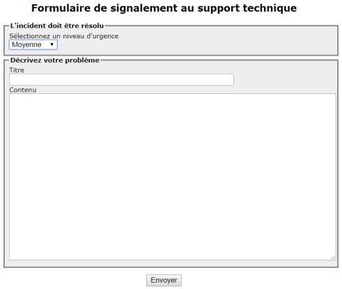

Module 09 — Assistance avec GLPI¶
La transcription du support Drive et l’aide pédagogique sont séparées pour rendre leur provenance explicite.
SOURCE DRIVE · TRANSCRIPTION DU SUPPORT
Le contenu des documents du dossier TSSR est transcrit ci-dessous, page par page. Les textes et tableaux sont intégrés à la page Web. Aucun PDF ENI, diapositive ou reproduction de page n’est affiché. Seuls des croquis ou visuels isolés et vérifiés peuvent accompagner la transcription. Les versions et les consignes restent celles des supports de formation. Les compléments IA sont conservés dans leur onglet distinct.
Support · Module 09 - Support de cours · 11 pages transcrites
Page 1
Sensibilisation ITIL
Module 09 – Assistance avec GLPI
1
Assistance avec GLPI
Objectifs
• Découvrir la création d’un ticket
• Découvrir le traitement d’un ticket
• Appréhender la base de connaissance
2
Page 2
Assistance avec GLPI
Le ticket
• Dans le monde de l’informatique, tout fonctionne à base de ticket
• Cela va permettre de solliciter la DSI
• Un ticket passera par plusieurs statuts : cycle de vie du ticket
• Peut-être de type incident ou demande
• Doit compter un minimum d’informations
• De nombreux avantages
Répartition des
Traçabilité
Détection des
problèmes
tâches
Communication
Utilisation d’un outil de gestion de ticket
3
Assistance avec GLPI
L’assistance sous GLPI
• Système de gestion de tickets / outil de ticketing
• Conforme aux bonnes pratiques ITIL
• Recueil des sollicitations utilisateur pour une gestion centralisée
• Différents canaux de communication possibles
• Saisie, suivi et traitement du ticket
• Cycle de vie des tickets
• Statistiques possibles
4
Texte extrait des éléments graphiques du support
GLPI
D CS CS CS
GLPI
Page 3
Assistance avec GLPI
Flux d’entrée
Trois grandes façons de créer un ticket
• Interface d’ouverture de tickets anonymes
• Interface simplifiée
• Interface standard
Depuis GLPI
• Envoi d’un mail dans une boîte mail support
• Configuration d’un collecteur
Mail
• Création du ticket par téléphone
• Utilisation de l’interface standard par le technicien
Téléphone
5
Assistance avec GLPI
Cycle de vie d’un ticket
• Ni groupes et utilisateurs sur le ticket
Nouveau
• En attente d’éléments => Modification manuelle
En attente
• Au moins un utilisateur/groupe est attribué
En cours attribué
• Une tâche vient d’être planifiée
En cours planifié
• Une solution vient d’être apportée au ticket
Résolu
• La solution est approuvée par le demandeur
Clos
6
Lecture continue du texte source
Assistance avec GLPI
Flux d’entrée
Trois grandes façons de créer un ticket
• Interface d’ouverture de tickets anonymes
Depuis GLPI • Interface simplifiée
• Interface standard
Mail •• EnvoiConfigurationd’un maild’undanscollecteurune boîte mail support
Téléphone •• CréationUtilisationdudeticketl’interfacepar téléphonestandard par le technicien
5
Assistance avec GLPI
Cycle de vie d’un ticket
Nouveau • Ni groupes et utilisateurs sur le ticket
En attente • En attente d’éléments => Modification manuelle
En cours attribué • Au moins un utilisateur/groupe est attribué
En cours planifié • Une tâche vient d’être planifiée
Résolu • Une solution vient d’être apportée au ticket
Clos • La solution est approuvée par le demandeur
6Texte extrait des éléments graphiques du support
GLPI
=
GLPI
(
(
(
([|
[Ld
Page 4
Assistance avec GLPI
Traitement d’un ticket : aperçu
7
Assistance avec GLPI
Traitement d’un ticket : attribution
• Utilisateurs, groupes ou fournisseurs
• Représente les techniciens ou groupes de compétence en charge
du ticket
• Utilisé lors des escalades fonctionnelles
• Raccourci pour s’attribuer nominativement le ticket
• Peut être automatisé en fonction de critères à la création du ticket
• Ticket visible pour traitement par les groupes et utilisateurs
attribués
Attribution
8
Texte extrait des éléments graphiques du support
Validations
ee
te
=
ee
Éléments
su
ns
°
Problèmes
oo
aa
.
wee
Sauercame
soc
ene
Samoa
Attribué à + ¢
Attribué à + ¢
eni
4 GLPI-GRP-N1-SUPPORT - io
4 GLPI-GRP-N1-SUPPORT-
i ©
Page 5
Assistance avec GLPI
Traitement d’un ticket : observateurs
• Utilisé lors des escalades hiérarchiques
• Utilisateurs et groupes
• Notifications sans traitement possible du ticket
• Va permettre de suivre l’évolution d’un ticket
• Peuvent être ajoutés automatiquement à la création en fonction de
critères
Ajout
9
Assistance avec GLPI
Traitement d’un ticket : SLA
• Doivent être facilement identifiables
• Le type : temps de résolution
• La durée maximum de résolution souhaitée
• Possibilité de créer des niveaux d’escalade
Dépasser la date butoir de résolution
n’est pas bloquant, juste informatif
10
Texte extrait des éléments graphiques du support
on
ae
Observateur +
servateur
Utilisateur
>
Baelish Petyr
voit
Suivi par courriel
Oui +
End
Courriel : |PBaelish@got
local
en
Stas
Gor
Nom
RES-PRIORITE 1
sun
Priorité1
Dernière modification
2018-09-26 16:17
Commentaires
Te
Temps
de résolution
Durée maximale
1
oy)
Heures
+
Créé le 2018-09-26 16:17
Sauvegarder
en
Page 6
Assistance avec GLPI
Traitement d’un ticket : validation
• Un ticket peut nécessiter une validation hiérarchique
• Manuelle ou automatique à la création
• Non bloquant pour le traitement du ticket
• Droits spécifiques pour pouvoir être « valideur »
• Demandes multiples possibles
11
Assistance avec GLPI
Traitement d’un ticket : validation
• Les valideurs reçoivent une notification de validation
• Ils approuvent ou refusent en accédant au ticket à valider.
Comment ?
Liste de ses tickets à valider
Depuis notre vue personnelle
12
Texte extrait des éléments graphiques du support
Ticket
Validations pour le ticket
Traitement du ticket
0
Envoyer unedemande
de validation
wth
Date de ta
Demandeur de ta
commentaire de ta
Statutde
Statistiques
Es
demande
validation
demande
validation
co
Validations
Ce
2018-11-07 20:41
gloï
Tu valides’
ee
Lop
ent
DER
2511072041
obi
Tu valides?
Aeryn on
nl
Accueil
Assistance
Tickets
+
Q
:= (D>
Vos tickets à valider
©
Demandeur
Éléments
Description
D
Générat
creat
L
w
ene
Page 7
Assistance avec GLPI
Traitement d’un ticket : validation
13
Assistance avec GLPI
Traitement d’un ticket : traitement
• Onglet Traitement du ticket
• Quatre possibilités
• Suivi
• Tâche
• Solution
• Document
14
Texte extrait des éléments graphiques du support
Date de la
Demandeurde ta
commentaire de la
Statut de
commentaire de ta
ES
demande
validation
demande
validation
Velideur
validation
En attente de
;
Clegane
a
2018-11-07 20:41
ipl
Tu valides?
gen
ER
-016-1107 20441
oi
ru valdes?
arr Jon
Statut de la demande de validation
En atente de validation
État de ma vaiation
acceptée +
commentaire de a validation
Ok poor
CFacultatf en cas daccepttion)
Statut global de a validation
acceptée +
Sauvegarder
État
En attente
Validation minimale nécessaire
50%
+
Sauvegarder
Validations pour le ticket
Envoyer une demande de validation
Date de ta
Demandeur dela
commentaire de la
GS
‘demande
validation
demande
7
BEEN 2016-11-07 20:41 ap
ru valdes?
x
ene
Ticket
.
Ajouter
:
2
Suivi
&
Tâche
$
Document
#Y
Solution
Traitement du ticket
4
SEE
Historique des actions :
ene
Page 8
Assistance avec GLPI
Traitement d’un ticket : clôture
• La clôture du ticket s’effectue à l’approbation de la solution
• Peut être effectuée par le demandeur ou le rédacteur (ticket par
téléphone)
• Accessible par le mail de validation ou le menu ticket de l’interface
simplifiée
• Commentaire obligatoire en cas de refus
• Possibilité de planifier ou rendre la clôture immédiate à la résolution
15
Assistance avec GLPI
Ticket : éléments liés
• Liaison de CI possible à la création d’un ticket
• Utile pour le diagnostic
• Utile pour les statistiques
• Nécessite une CMDB à jour et bien renseignée
16
Texte extrait des éléments graphiques du support
TE
Approbation de la solution
Traitement du ticket
4
a fonctionne merci
Statistiques
commentaires
"
(Facultatifen cas d'acceptation)
Base de connaissances
>
ent
Éléments
2
Refuser la solution
‘Approuver
Ia solution
Statistiques
validations,
Actions
fléments
8
ordinateur
cor
Dell Latitude 3590
arToP-0001
coûts
Loic
cor
Pack office
-
en
Page 9
Assistance avec GLPI
Base de connaissances : article
• Objectifs
• Centraliser des connaissances internes aux différents techniciens
• Mettre à disposition des utilisateurs des informations (FAQ)
• Accessible depuis Outils => Base de connaissances
• Restriction à un nombre d’acteurs
• Validation de publications d’articles
• Gestion des révisions
• Liaisons possibles avec les tickets et les éléments d’inventaire (CI)
• FAQ : sous-partie de la base de connaissances à destination des
utilisateurs
• Organisation possible par catégories et restrictions temporelles
17
Assistance avec GLPI
Base de connaissances : création
• Création d’un article
• Ajout des cibles
• Usage public ou non
• Article sans cible = Article non publié
• Apparaît dans Gérer
• Visible que par son créateur
18
Texte extrait des éléments graphiques du support
GLPI
GLPI
nu
Page 10
Assistance avec GLPI
Base de connaissances : cibles
• Vont permettre de publier l’article à différentes personnes
• Entité – Profil – Groupe - Utilisateur
19
Assistance avec GLPI
Base de connaissances publiques
• Éviter la création systématique d’un ticket
• FAQ (Foire Aux Questions)
• Accessible depuis l’interface simplifiée
• Accès rapide ou par catégories
20
Texte extrait des éléments graphiques du support
Sujet
Contenu
Rédacteur : olpi
Non publié
Créé le 2018-11-08 00:31
2 vues
Dernière mise à jour le 2018-11-08 00:37
Cet élément fait partie de la FAQ
Ajouter une cible
Entité à
cor
rl
ie
Sous-entités
Non
+
Ajouter
Groupe
Type
Destinataires
:
Prof
>en
Utlisateur
Rechercher | Parcourir
Rechercher
Sujets les plus récents
Dernières mises à jour
Sujets les plus populaires
en
Page 11
Assistance avec GLPI
Création et gestion
Démo
des tickets
21
Assistance avec GLPI
TP
L'exploitation des
services
22
Texte extrait des éléments graphiques du support
N
Référence du document : 1nf0OyiQI-Q464T8fgaIOZz2t4TV0Jzom · SHA-256 2e927cb500d1515b…
Énoncé · M09 - S01 TP-L'exploitation des services · 1 pages transcrites
Page 1
Sensibilisation à ITIL
ITIL - L'exploitation des services
TP du Module 09 – Assistance avec GLPI
Avant de démarrer ce TP, il convient d’avoir suivi les vidéos des modules 1 à 9 et d’avoir
réalisé les TP proposés.
Durée estimée
3 heures
Énoncé
On vous demande d'étudier un nouveau service :
o Accueil d'un nouveau salarié commercial
1. Stratégie des Services
o Vous avez défini les grandes lignes de ce nouveau service
2. Conception des Services
o Vous avez détaillé les différentes étapes du service
3. Transition des Services
o Vous avez défini les temps d'intervention et le rôle de chaque technicien pour
chaque étape
4. Exploitation des Services
o Maintenant, vous allez lier les informations théoriques et l'utilisation de GLPI
Page 1/1
© ENI – Tous droits réservés
Référence du document : 1Uu8gtmvuVlvvhQvCmNfoVJ66Rsa6wPbQ · SHA-256 74146f1c688e5029…
Correction · M09 - S01 TP-Corrigé_L'exploitation des services · 17 pages transcrites
Correction originale : à consulter après avoir tenté l’exercice.
Page 1
Sensibilisation à ITIL
ITIL - L'exploitation des services
TP du Module 09 – Assistance avec GLPI
Avant de démarrer ce TP, il convient d’avoir suivi les vidéos des modules 1 à 9 et d’avoir
réalisé les TP proposés.
Durée estimée
3 heures
Solution
Etape 1 - Création du ticket par le responsable du service
Vous ouvrez une session sur GLPI en tant que directeur commercial :
•
Login : balon.grejoy
•
Mot de passe : password
Création du ticket
•
Cliquer sur créer un ticket
•
Type : demande
•
Catégorie : Nouveau Poste Complet
•
Lieu : Service Commercial
•
Titre : rempli automatiquement (ne pas changer)
•
Description : Compléter les informations concernant les salariés
Les informations du salarié
•
Nom : Targaryan
•
Prénom : Deanerys
•
Fonction : Commercial Itinérant
•
Service : Commercial
Vous fermez la session
Pour vérifier, vous pouvez vous connecter avec l’utilisateur « balon.grejoy » pour suivre
l’évolution du ticket.
•
Une fois que la session est ouverte
•
Cliquer sur « Tickets »
•
Sélectionner le ticket
Page 1/17
© ENI – Tous droits réservés
Page 2
Sensibilisation à ITIL
•
Dans le menu de gauche, sélectionner « Traitement du ticket »
•
Vous avez un aperçu de l’évolution du traitement du ticket
Vous fermez la session
Page 2/17
© ENI – Tous droits réservés
Page 3
Sensibilisation à ITIL
Etape 2 - Traitement du ticket par le support N1
Vous ouvrez une session sur GLPI en tant que technicien de support de niveau 1
•
Login : hoster.tully
•
Mot de passe : password
Vous ouvrez le ticket et vous l’escaladez vers le groupe des techniciens parc :
•
Cliquer sur « Assistance », puis « tickets »
•
Dans la liste des tickets, cliquer sur le titre du ticket.
o « Nouveau poste pour un nouveau salarié »
Dans le menu de gauche, sélectionner « Ticket »
•
Dans le corps du ticket,
•
Dans la zone « Acteur »
•
Dans la colonne « Attribué à »
•
Supprimer le groupe « GLPI-GRP-Support » en cliquant sur
•
Cliquer sur « + » à côté de « Attribué à »
o Sélectionner « Groupe »
o Sélectionner « GLPI-GRP-PARC », escalade fonctionnelle
•
Sauvegarder le ticket
•
Cliquer sur « + » à côté de « Attribué à »
o Sélectionner « utilisateur »
o Sélectionner « Tyrion Lannister »
•
Sauvegarder le ticket
Dans le menu de gauche, sélectionner « Traitement du ticket »
•
Cliquer sur « Suivi »
•
Dans « nouvel élément – suivi »
o Saisir « Escalade vers le groupe techniciens parc et envoi à l’administrateur
AD pour la création des différents comptes »
o Cliquer sur « Ajouter »
Fermer la session du technicien de support.
•
Pour fermer la session, il faut cliquer sur
Page 3/17
© ENI – Tous droits réservés
Page 4
Sensibilisation à ITIL
Etape 3 - Vérification et sortie du matériel du stock.
Vous ouvrez une session sur GLPI en tant que technicien de support Parc.
•
Login : jorah.mormont
•
Mot de passe : password
Vous allez maintenant cliquer sur « Parc »
•
Vous effectuez une recherche pour retrouver les éléments suivants :
Matériel
Nom
N° Inventaire
Nouveau nom
Ordinateurs
Dell XPS 15
LAPTOP-0013
ITI-XPS15-006
Périphériques
(dock)
WD19DCS
Dock-00006
ITI-WD19DCS-006
Moniteurs
Dell 24 SE2416H
Dell 24 SE2416H-00027
ITI-Dell24-006
Téléphones
Tel Cisco 7811
TEL-0030
ITI-Cisco7811-006
Téléphones
IPhoneX
MOB-0006
ITI-IphoneX-006
•
Pour chaque élément trouvé :
o Vous le renommez avec le nouveau nom présent dans le tableau.
o Exemple pour renommer l’ordinateur à suivre.
Pour effectuer la rechercher de l’ordinateur :
•
Vous cliquez sur « Parc » puis « Ordinateurs »
•
Dans la zone de recherche, vous indiquez les éléments suivants :
•
Vous récupérez tous les ordinateurs en stock
o Vous cliquez sur le nom de l’ordinateur « Dell XPS 15 » portant le numéro
d’inventaire « Laptop-0013 »
o La fiche de l’ordinateur s’ouvre.
o Vous renommez l’ordinateur avec son nouveau nom.
•
Vous sauvegardez.
Vous procédez de la même façon avec les différents éléments.
Page 4/17
© ENI – Tous droits réservés
Texte extrait des éléments graphiques du support
8
-——
7
Éléments visualisés
*
contient
+ | stock
ent
| Maté riel Nom N° Inventaire Nouveau nom | |||
| Ordinateurs | Dell XPS 15 | LAPTOP 0013 - | ITI XPS15 006 - - |
| Pé riphé riques (dock) | WD19DCS | Dock -00006 | ITI WD19DCS 006 - - |
| Moniteurs | Dell 24 SE2416H | Dell 24 SE2416H -00027 | ITI -Dell24 -006 |
| Télé phones | Tel Cisco 7811 | TEL 0030 - | ITI -Cisco7811 -006 |
| Télé phones | IPhoneX | MOB 0006 - | ITI -IphoneX -006 |
Page 5
Sensibilisation à ITIL
Maintenant que tous les éléments ont été renommés, vous allez les lier pour pouvoir
effectuer les déplacements de façon global.
Vous allez ouvrir la fiche de l’ordinateur :
•
Vous cliquez sur « Parc » puis « Ordinateurs »
•
Dans la zone de recherche, vous indiquez les éléments suivants :
•
Vous récupérez tous les ordinateurs en stock
•
Vous cliquez sur le nom de l’ordinateur « ITI-XPS15-006 » portant le numéro d’inventaire
« Laptop-0013 »
•
La fiche de l’ordinateur s’ouvre.
•
Dans le menu de gauche, vous cliquez sur « Connexions ».
o Sous « Connecter un élément »
o Sélectionnez « Moniteur », puis dans le menu qui vient d’apparaître vous
cliquez sur la flèche à l’extrémité droite pour faire apparaître la liste des
moniteurs disponible.
o Vous sélectionnez le moniteur se nommant « ITI-Dell24-006 » puis vous cliquez
sur « connecter ».
o Vous avez la possibilité d’effectuer des recherches dans le menu déroulant
pour filtrer les éléments qui apparaissent dans la liste :
Page 5/17
© ENI – Tous droits réservés
Texte extrait des éléments graphiques du support
E
—
7
Éléments visualisés
*
contient
+ | stock
Moniteur
+
Téléphone
¥
iti]
GOT
ITHphoneX-001 - MOB-0001
{Tl-IphoneX-002 - MOB-0002
F
{l-IphoneX-003 - MOB-0003
ITHphoneX-004 - MOB-0004
ITl-iphoneX-005 - MOB-0005
ITl-iphoneX-006 - MOB-0006
ent
Page 6
Sensibilisation à ITIL
•
Procéder de la même façon pour les autres matériels.
•
Vous devez obtenir :
Vous déplacez l’ensemble du matériel pour qu’ils soient préparés.
•
Dans le menu de gauche, sélectionnez l’onglet « Ordinateur »
o Vous changez la rubrique statut de « En stock » par « A préparer »
o Vous changez le lieu :
▪
De « …>Service Informatique>Stock »
▪
Par
« …>Service
Informatique>Stock>Matériels
à
préparer>A
préparer1 »
•
Sauvegarder
Vous vérifiez que tous les matériels sont dans le même lieu que l’ordinateur et vous allez
changer leur statut
•
A partir de la fiche de l’ordinateur, dans le menu de gauche, vous cliquez sur
« Connexions », vous cliquez le nom du moniteur « ITI-Dell24-006 ».
•
La fiche de moniteur s’ouvre :
o Dans le menu de gauche, cliquez sur « Moniteur ».
o Le lieu doit contenir « …>Service Informatique>Stock>Matériels à préparer>A
préparer 1 ».
o Modifier le statut en « A préparer ».
•
Sauvegarder
•
Dans le menu de gauche, cliquez sur « Connexions »
o Cliquer sur le nom de l’ordinateur « ITI-XPS-006 » pour retourner sur la fiche de
l’ordinateur.
•
Vous procédez de la même façon avec les autres matériels.
o Ils doivent être tous dans le même lieu
o Ils doivent tous avoir le statut « A préparer »
Page 6/17
© ENI – Tous droits réservés
Texte extrait des éléments graphiques du support
Connecter un élément
—
7
;
NS
Type
Nom
Entité
Numéro de série
Numéro d'inventaire
Moniteur
ITI-Dell24-006
GoT
Dell 24 SE2416H-00027
Périphérique
ITLWD19DCS-006
GoT
Dock-00006
Téléphone
Mi-Cisco7811-006
GoT
TEL-0030
Téléphone
Ttiphonex-006
GoT
MOB-0006
Type
Nom
Entité
Numéro de série
Numéro d'inventaire
Page 7
Sensibilisation à ITIL
Vous allez modifier le ticket pour indiquer ce que vous avez fait. Vous ouvrez le ticket et
vous allez sortir le matériel du stock.
•
Cliquer sur « Assistance », puis « tickets »
•
Dans la liste des tickets, cliquer sur le titre du ticket.
o « Nouveau poste pour un nouveau salarié »
Dans le menu de gauche, sélectionner « Ticket »
•
Dans le corps du ticket,
o Dans la zone « Description »
o Vous remplissez les champs suivants :
▪
Matériel disponible : OK
o Dans la zone « Acteur »
o Vérifier qu’il y a le groupe « GLPI-GRP-PARC » et l’utilisateur « Tyrion Lannister »
de présent.
•
Sauvegarder
Vous allez rajouter le matériel au ticket
•
Dans le menu de gauche, sélectionner « Eléments »
•
A partir de la « recherche complète », vous allez rajouter les éléments au ticket.
•
Vous devez obtenir :
Dans le menu de gauche, sélectionner « Traitement du ticket »
•
Cliquer sur « Suivi »
•
Dans « nouvel élément – suivi »
o Saisir « Sortie du matériel du stock, prêt à être installé »
o Cliquer sur « Ajouter »
Fermer la session du technicien de parc.
Page 7/17
© ENI – Tous droits réservés
Texte extrait des éléments graphiques du support
Ajout d'un élément
Mes éléments
—
+
Ou recherche complète
—
+
od
NV
Type
Entité
Nom
Numéro de série
Numéro d'inventaire
Ordinateur
GOT
ITI-XPS15-006
LAPTOP-0013
Moniteur
GOT
ITI-Dell24-006
Dell 24 SE2416H-00027
Périphérique
GOT
ITI-WD19DCS-006
Dock-00006
Téléphones: 2
GOT
ITI-Cisco7811-006
TEL-0030
GOT
ITi-iphoneX-006
MOB-0006
Page 8
Sensibilisation à ITIL
Etape 4 - Création des comptes par l’administrateur Active Directory.
•
Vous ouvrez une session sur GLPI en tant que technicien de support de niveau 1.
•
Login : tyrion.lannister
•
Mot de passe : password
Vous ouvrez le ticket pour gérer l’installation du système d’exploitation et des logiciels.
•
Cliquer sur « Assistance », puis « tickets »
•
Dans la liste des tickets, cliquer sur le titre du ticket.
o « Nouveau poste pour un nouveau salarié »
Dans le menu de gauche, sélectionner « Ticket ».
•
Dans le corps du ticket,
o Dans la zone « Description »
o Vous remplissez les champs suivants :
▪
Compte GLPI créé : OK
▪
Compte Active Directory créé : OK
▪
Compte Office 365 créé : OK
▪
Badge créé : OK
o Dans la zone « Acteur »
▪
Supprimer l’utilisateur « Tyrion Lannister » pour qu’il ne reste que le
groupe « GLPI-GRP-PARC ».
•
Sauvegarder
Vous modifiez le suivi du ticket.
•
Dans le menu de gauche, sélectionner « Traitement du ticket »
•
Cliquer sur « Suivi »
•
Dans « nouvel élément – suivi »
o Saisir « Création des différents comptes effectués »
o Cliquer sur « Ajouter »
Fermer la session de l’administrateur Active Directory.
Page 8/17
© ENI – Tous droits réservés
Page 9
Sensibilisation à ITIL
Etape 5 - Préparation du matériel
Vous considérez que le matériel a été testé et que le système d’exploitation ainsi que les
logiciels ont été installés.
Vous allez gérer que les informations côté ticket et apporter des modifications à
l’ordinateur.
Vous ouvrez une session sur GLPI en tant que technicien de support Parc.
•
Login : barristan.selmy
•
Mot de passe : password
Vous ouvrez le ticket pour gérer l’installation du système d’exploitation et des logiciels.
•
Cliquer sur « Assistance », puis « tickets »
•
Dans la liste des tickets, cliquer sur le titre du ticket.
o « Nouveau poste pour un nouveau salarié »
Dans le menu de gauche, sélectionner « Eléments »
•
Vous accédez à la liste des objets liés au ticket
•
Cliquer sur le nom de l’ordinateur « ITI-XPS15-006 » pour accéder à la fiche.
Dans le menu de gauche, sélectionner « Systèmes d’exploitation »
•
Vous remplissez les différents champs et vous sauvegardez pour obtenir :
•
Vous venez de renseigner le système d’exploitation qui a été installé.
Dans le menu de gauche, sélectionner « Logiciels »
•
Vous allez ajouter les logiciels installés sur l’ordinateur.
•
Pour installer « 7Zip » :
o En haut de la fenêtre, dans "Logiciels", sélectionner « 7Zip 64bits »
o Dans le menu qui est apparu, sélectionner « 7Zip 21.06 – En stock »
o Cliquer sur « Installer », vous venez de lier un logiciel à l’ordinateur.
o Vous installez ensuite la licence.
o En bas de la fenêtre, dans "Licences", sélectionner « 7Zip64 bits »
o Dans le menu qui est apparu, sélectionner « 7Zip 21.06 »
Page 9/17
© ENI – Tous droits réservés
Texte extrait des éléments graphiques du support
Système d'exploitation
Nom
Windows
+
i@
Version
10
vy
iO
Architecture
64Bits
»
iO
Service pack
—
vy
io
Noyau
—
v¥
io
Edition
Entreprise
+»
iO
Product ID
Numéro de série
A Sauvegarder
© Supprimer définitivement
Page 10
Sensibilisation à ITIL
o Cliquer sur « Ajouter »
Vous procédez de la même façon pour installer les autres logiciels.
•
Liste des logiciels à installer
Logiciels
Licences
7Zip 64bits
7Zip 21.06 – En utilisation
7Zip 64bits
7Zip 21.06
Acrobat Reader DC
Acrobat DC 2021.007 –
En utilisation
Acrobat Reader DC
Acrobat DC 2021.007
Chrome 64bits
Chrome 96.0.4664.110 –
En utilisation
Chrome 64bits
Chrome 96.0.4664.110
Java 64bits
Java 8 Update 311 –
En utilisation
Java 64bits
Java 8 Update 311
OpenVPN
OpenVPN 2.5.5-
En utilisation
OpenVPN
OpenVPN 2.5.5
Pack Office
2016 Standard –
En utilisation
Pack Office
2016 Standard
Dans le menu de gauche, sélectionner « Ordinateur »
•
Vous modifiez le statut de l’ordinateur
o Vous remplacez « En stock > A préparer » par « En stock > A livrer »
•
Vous modifiez le lieu
o Vous remplacez « >Matériels à préparer > A préparer 1 » par « >Matériels à
livrer > A livrer 1 »
•
Vous sauvegardez
Vous faites les mêmes changements sur les autres éléments.
•
Pour retrouver les éléments plus rapidement, passer par le ticket.
•
Comme les éléments sont liés, le changement a dû être pris en compte
o Vérifier le lieu
•
Modifier le statut
•
Sauvegarder les modifications avant de changer de matériel.
Page 10/17
© ENI – Tous droits réservés
| Logiciels Licences | |||
| 7Zip64bits | 7Zip 21 .06 En utilisation – | 7Zip64bits | 7Zip2106 . |
| AcrobatReaderDC | Acrobat DC 2021 .007 – Enutilisation | AcrobatReaderDC | AcrobatDC2021007 . |
| Chrome64bits | Chrome 96 .0 .4664 .110 – Enutilisation | Chrome64bits | Chrome9604664110 . . . |
| Java64bits | Java8Update311 – Enutilisation | Java64bits | Java8Update311 |
| OpenVPN | OpenVPN 2 .5 .5 - Enutilisation | OpenVPN | OpenVPN255 . . |
| PackOffice | 2016Standard – Enutilisation | PackOffice | 2016Standard |
Page 11
Sensibilisation à ITIL
Vous modifiez le suivi du ticket.
•
Cliquer sur « Assistance », puis « tickets »
•
Dans la liste des tickets, cliquer sur le titre du ticket.
o « Nouveau poste pour un nouveau salarié »
Dans le menu de gauche, sélectionner « Ticket »
•
Dans le corps du ticket,
•
Dans la zone « Description »
o Vous remplissez les champs suivants :
▪
Prises électriques installées et créées : OK
▪
Prises réseaux installées et testées : OK
▪
Mobilier installé : OK
▪
Matériel installé : OK
o Dans la zone « Acteur »
▪
Vérifier qu’il y a le groupe « GLPI-GRP-PARC ».
•
Sauvegarder
Dans le menu de gauche, sélectionner « Traitement du ticket »
•
Cliquer sur « Suivi »
•
Dans « nouvel élément – suivi »
o Saisir « Matériel vérifié et configuré, prêt à être livré »
▪
Cliquer sur « Ajouter »
Etape 6 - Livraison et installation du matériel
Vous ouvrez une session sur GLPI en tant que technicien de support Parc.
•
Login : jorah.mormont
•
Mot de passe : password
Vous ouvrez le ticket pour gérer la livraison du matériel.
•
Le matériel a été livré, installé et configuré, le technicien parc effectue les modifications
nécessaires dans GLPI.
•
Cliquer sur « Assistance », puis « tickets »
•
Dans la liste des tickets, cliquer sur le titre du ticket.
o « Nouveau poste pour un nouveau salarié »
Dans le menu de gauche, sélectionner « Eléments »
•
Vous accédez à la liste des objets liés au ticket
•
Cliquer sur le nom de l’ordinateur « ITI-XPS15-006 » pour accéder à la fiche.
Page 11/17
© ENI – Tous droits réservés
Page 12
Sensibilisation à ITIL
Dans le menu de gauche, sélectionner « Ordinateur »
•
Modifier le statut de l’ordinateur
o Remplacer « En stock > A livrer » par « En utilisation »
•
Modifier le lieu
o Remplacer « >Matériels à livrer > A livrer 1 » par « Service Commercial »
•
Modifier l’utilisateur
o Sélectionner l’utilisatrice « Deanerys Targaryan »
•
Sauvegarder
•
Tout le matériel est déplacé dans le nouveau lieu et l’utilisatrice est mise à jour sur toutes
les fiches des matériels.
Dans le menu de gauche, sélectionner « Connexions ».
•
Cliquer sur « ITI-Cisco-7811-006 », vous ouvrez la fiche du téléphone IP.
•
Modifier le statut
o Remplacer « En stock > A livrer » par « En utilisation »
o Sauvegarder
Dans le menu de gauche, sélectionner « Ports réseau ».
•
Cliquez sur le « 1 » en début de ligne.
o Dans la liste déroulante « Prise réseau », vous sélectionnez « S231-161 »
o Dans la liste déroulante « Connecté à », vous sélectionnez :
▪
« Matériel réseau »
▪
« Switch-Rezo-C2960L-Utilisateurs »
▪
« Switch-Rezo-C2960L-Utilisateurs - Le port eth26 »
o Vous sauvegardez
En faisant cette manipulation, vous venez d’indiquer sur quelle prise murale est branché le
téléphone IP et vous avez indiqué sur quel port de quel switch est connectée la prise
murale.
Pour revenir sur la fiche du téléphone.
•
Cliquer sur le nom du téléphone en haut de la fiche.
Page 12/17
© ENI – Tous droits réservés
Texte extrait des éléments graphiques du support
Non connecté.
Matériel réseau
¥
Switch-Rezo-C2960L-Utilisateurs
+ | i
…:- Le port eth26 - Prise réseau Baie4-Rézo-14
+
Page 13
Sensibilisation à ITIL
Pour revenir sur la fiche de l’ordinateur.
•
Dans le menu de gauche, sélectionner « Connexions ».
•
Cliquer sur le nom de l’ordinateur « ITI-XPS15-006 ».
Sur la fiche de l’ordinateur.
•
Dans le menu de gauche, sélectionner « Connexions » pour faire apparaître la liste du
matériel.
•
Cliquer sur le nom du moniteur « ITI-Dell24-006 » pour accéder à la fiche du moniteur.
Sur la fiche du moniteur
•
Modifier le statut
o Remplacer « En stock > A livrer » par « En utilisation »
o Sauvegarder
Pour revenir sur la fiche de l’ordinateur.
•
Dans le menu de gauche, sélectionner « Connexions ».
•
Cliquer sur le nom de l’ordinateur « ITI-XPS15-006 ».
Sur la fiche de l’ordinateur.
•
Dans le menu de gauche, sélectionner « Connexions » pour faire apparaître la liste du
matériel.
•
Cliquer sur le nom du périphérique « ITI-WDS19DCS-006 » pour accéder à la fiche du
dock.
Sur la fiche du dock.
•
Dans le menu de gauche, sélectionner « Périphérique ».
•
Modifier le statut
o Remplacer « En stock > A livrer » par « En utilisation »
o Sauvegarder
Dans le menu de gauche, sélectionner « Ports réseau ».
•
Cliquez sur le « 1 » en début de ligne.
o Dans la liste déroulante « Connecté à », vous sélectionnez :
▪
« Téléphone »
Page 13/17
© ENI – Tous droits réservés
Texte extrait des éléments graphiques du support
Port réseau
Téléphone :
ITL-Cisco7811-006 =
Numéro de
1
port
Nom
ethü1l
Page 14
Sensibilisation à ITIL
▪
« ITI-Cisco7811-006 »
▪
« ITI-Cisco7811-006 – Le port eth02 – Prise réseau S331-031 »»
o Sauvegarder
Pour revenir sur la fiche du dock.
•
Cliquer sur le nom du dock en haut de la fiche.
En faisant cette manipulation, vous venez d’indiquer que le câble Ethernet du dock est
connecté au micro switch du téléphone pour accéder au réseau de l’entreprise.
Pour revenir sur la fiche de l’ordinateur.
•
Dans le menu de gauche, sélectionner « Connexions ».
•
Cliquer sur le nom de l’ordinateur « ITI-XPS15-006 ».
Sur la fiche de l’ordinateur.
•
Dans le menu de gauche, sélectionner « Connexions » pour faire apparaître la liste du
matériel.
•
Cliquer sur le nom du téléphone « ITI-IphoneX-006 » pour accéder à la fiche du
téléphone.
Sur la fiche du téléphone.
•
Dans le menu de gauche, sélectionner « Téléphone ».
•
Modifier le statut
o Remplacer « En stock > A livrer » par « En utilisation »
o Sauvegarder
Pour revenir sur la fiche de l’ordinateur.
•
Dans le menu de gauche, sélectionner « Connexions ».
•
Cliquer sur le nom de l’ordinateur « ITI-XPS15-006 ».
Page 14/17
© ENI – Tous droits réservés
Texte extrait des éléments graphiques du support
Non connecté.
Téléphone
¥
ITI-Cisco7811-006
+
i
.. 1-006 - Le port eth02
- Prise réseau 5331-031
+
Port réseau
Périphérique
:
ITI-WD19DC5-006(ms
Numéro de port
1
Nom
ethOl
Page 15
Sensibilisation à ITIL
Sur la fiche de l’ordinateur.
•
Dans le menu de gauche, vous cliquez sur « Connexions ».
o Sous « Connecter un élément »
o Sélectionner « Imprimantes »
o Sélectionner l’imprimante nommée « Com-Lex-MS310DN-001 – IMP-0005 »
o Cliquer sur « Connecter »
En faisant cette manipulation, vous venez d’indiquer quelle imprimante peut utiliser
l’utilisateur de l’ordinateur.
Vous obtenez ceci.
Page 15/17
© ENI – Tous droits réservés
Texte extrait des éléments graphiques du support
Connecter un élément
un
+
Conn:
Ÿ
Actions
Type
Nom
Entité
Numéro de série
Numéro d'inventaire
Moniteur
ITI-Dell24-006
GOT
Dell 24 SE2416H-00027
Périphérique
ITI-WD19DCS-006
GOT
Dock-00006
Téléphone
ITI-Cisco7811-006
GOT
TEL-0030
Téléphone
ITl-IphoneX-006
GOT
MOB-0006
Imprimante
Com-Lex-MS310DN-001
GOT
IMP-0005
Page 16
Sensibilisation à ITIL
Vous modifiez le suivi du ticket.
•
Cliquer sur « Assistance », puis « tickets »
•
Dans la liste des tickets, cliquer sur le titre du ticket.
o « Nouveau poste pour un nouveau salarié »
Dans le menu de gauche, sélectionner « Ticket »
•
Dans le corps du ticket,
•
Dans la zone « Description »
o Vous remplissez les champs suivants :
▪
Matériel livré : OK
o Sauvegarder
Dans le menu de gauche, sélectionner « Traitement du ticket »
•
Cliquer sur « Suivi »
•
Dans « nouvel élément – suivi »
o Saisir « Matériel livré et installé »
o Cliquer sur « Ajouter »
Dans le menu « Ajouter : », cliquer sur « Solution ».
•
Gabarit de solution : Livraison de matériels
•
Type de solution : Livraison
•
Enregistrer et ajouter à la base de connaissances : NON
•
Description : prérempli
•
Ajouter
•
Le statut du ticket passe à « Résolu »
Fermer la session.
Page 16/17
© ENI – Tous droits réservés
Page 17
Sensibilisation à ITIL
Etape 7 - Clôture du ticket par le responsable du service.
Vous ouvrez une session sur GLPI en tant que directeur commercial :
•
Login : balon.grejoy
•
Mot de passe : password
Clôturer le ticket
•
Cliquer sur « Tickets »
•
Sélectionner le ticket
•
Dans le menu de gauche, sélectionner « Traitement du ticket »
o Vous avez un aperçu de l’évolution du traitement du ticket.
o Cliquer sur « Approuver la solution » pour clôturer le ticket.
•
Dans le menu de gauche, sélectionner « Ticket »
o Le statut de ticket est passé à « Clos ».
Fermer la session.
Page 17/17
© ENI – Tous droits réservés
Texte extrait des éléments graphiques du support
Statut
Clos
Référence du document : 1i035JKa6bXoX9kaLIH95ejMugk3WjpLI · SHA-256 25f6abc33502e1e8…
Complément IA / externe au cours — fiche pédagogique du portail
Cette fiche contient une reformulation et des aides d’apprentissage rédigées par IA. Elle est distincte de la transcription des documents du Drive et ne la remplace pas. Les schémas de synthèse de cette fiche sont des illustrations IA / externes au cours, sauf les captures explicitement attribuées à un document source.
Séquence : Sensibilisation ITIL et gestion de parc
Importance : socle de la progression officielle
Sources consolidées : 1 support(s) de cours, 1 énoncé(s), 1 correction(s)
Périmètre et versions
La progression suit principalement les publications du cycle de vie ITIL v3, complétées par une introduction à ITIL 4. Cette structure historique est conservée car elle constitue l’ordre officiel des supports.
Objectifs et compétences¶
- Créer et qualifier un ticket.
- Prendre en charge, suivre et résoudre.
- Documenter une solution dans la base de connaissances.
- Clôturer après validation par l’utilisateur.
Façon simple de le comprendre
Ce module sert à passer de la notion « Assistance avec GLPI » à une méthode que l’on peut expliquer, appliquer, vérifier et dépanner.
Méthode de travail¶
- Lire les concepts dans l’ordre du support.
- Reproduire les exemples dans un environnement de laboratoire.
- Noter le résultat attendu avant de modifier une configuration.
- Vérifier avec l’outil ou la commande appropriée.
- Revenir à l’état initial si le résultat diverge.
Cycle de vie d’un ticket¶
Illustration IA / externe au cours — schéma pédagogique de synthèse.
Le support distingue « résolu » de « clos » : la clôture intervient après approbation de la solution par le demandeur ou selon la règle prévue.


Module 09 - Support de cours¶
Sensibilisation ITIL¶
Module 09 — Assistance avec GLPI¶
- Découvrir la création d’un ticket
- Découvrir le traitement d’un ticket
- Appréhender la base de connaissance
- Dans le monde de l’informatique, tout fonctionne à base de ticket
- Cela va permettre de solliciter la DSI
- Un ticket passera par plusieurs statuts : cycle de vie du ticket
- Peut-être de type incident ou demande
- Doit compter un minimum d’informations
- De nombreux avantages
Le ticket¶
Traçabilité Détection des¶
problèmes¶
Répartition des¶
tâches Communication¶
Utilisation d’un outil de gestion de ticket¶
- Système de gestion de tickets / outil de ticketing
- Conforme aux bonnes pratiques ITIL
- Recueil des sollicitations utilisateur pour une gestion centralisée
- Différents canaux de communication possibles
- Saisie, suivi et traitement du ticket
- Cycle de vie des tickets
- Statistiques possibles
L’assistance sous GLPI¶
Trois grandes façons de créer un ticket¶
Flux d’entrée¶
- Interface d’ouverture de tickets anonymes
- Interface simplifiée
- Interface standard
Depuis GLPI¶
- Envoi d’un mail dans une boîte mail support
- Configuration d’un collecteurMail
- Création du ticket par téléphone
- Utilisation de l’interface standard par le technicien Téléphone
Cycle de vie d’un ticket¶
- Ni groupes et utilisateurs sur le ticketNouveau
- En attente d’éléments => Modification manuelleEn attente
- Au moins un utilisateur/groupe est attribuéEn cours attribué
- Une tâche vient d’être planifiéeEn cours planifié
- Une solution vient d’être apportée au ticketRésolu
- La solution est approuvée par le demandeurClos
Traitement d’un ticket : aperçu¶
- Utilisateurs, groupes ou fournisseurs
- Représente les techniciens ou groupes de compétence en charge
du ticket¶
- Utilisé lors des escalades fonctionnelles
- Raccourci pour s’attribuer nominativement le ticket
- Peut être automatisé en fonction de critères à la création du ticket
- Ticket visible pour traitement par les groupes et utilisateurs
attribués¶
Traitement d’un ticket : attribution¶
Attribution¶
critères¶
- Utilisé lors des escalades hiérarchiques
- Utilisateurs et groupes
- Notifications sans traitement possible du ticket
- Va permettre de suivre l’évolution d’un ticket
- Peuvent être ajoutés automatiquement à la création en fonction de
Traitement d’un ticket : observateurs¶
Ajout¶
- Doivent être facilement identifiables
- Le type : temps de résolution
- La durée maximum de résolution souhaitée
- Possibilité de créer des niveaux d’escalade
Traitement d’un ticket : SLA¶
Dépasser la date butoir de résolution¶
n’est pas bloquant, juste informatif¶
Traitement d’un ticket : validation¶
- Un ticket peut nécessiter une validation hiérarchique
- Manuelle ou automatique à la création
- Non bloquant pour le traitement du ticket
- Droits spécifiques pour pouvoir être « valideur »
- Demandes multiples possibles
- Les valideurs reçoivent une notification de validation
- Ils approuvent ou refusent en accédant au ticket à valider.
Comment ?¶
Traitement d’un ticket : validation¶
Liste de ses tickets à valider¶
Depuis notre vue personnelle¶
- Onglet Traitement du ticket
- Quatre possibilités
- Suivi
- Tâche
- Solution
- Document
Traitement d’un ticket : traitement¶
téléphone)¶
- La clôture du ticket s’effectue à l’approbation de la solution
- Peut être effectuée par le demandeur ou le rédacteur (ticket par
- Accessible par le mail de validation ou le menu ticket de l’interface
simplifiée¶
- Commentaire obligatoire en cas de refus
- Possibilité de planifier ou rendre la clôture immédiate à la résolution
Traitement d’un ticket : clôture¶
- Liaison de CI possible à la création d’un ticket
- Utile pour le diagnostic
- Utile pour les statistiques
- Nécessite une CMDB à jour et bien renseignée
Ticket : éléments liés¶
- Objectifs
- Centraliser des connaissances internes aux différents techniciens
- Mettre à disposition des utilisateurs des informations (FAQ)
- Accessible depuis Outils => Base de connaissances
- Restriction à un nombre d’acteurs
- Validation de publications d’articles
- Gestion des révisions
- Liaisons possibles avec les tickets et les éléments d’inventaire (CI)
- FAQ : sous-partie de la base de connaissances à destination des
utilisateurs¶
- Organisation possible par catégories et restrictions temporelles
Base de connaissances : article¶
- Création d’un article
- Ajout des cibles
- Usage public ou non
- Article sans cible = Article non publié
- Apparaît dans Gérer
- Visible que par son créateur
Base de connaissances : création¶
Base de connaissances : cibles¶
- Vont permettre de publier l’article à différentes personnes
- Entité — Profil — Groupe - Utilisateur
- Éviter la création systématique d’un ticket
- FAQ (Foire Aux Questions)
- Accessible depuis l’interface simplifiée
- Accès rapide ou par catégories
Base de connaissances publiques¶
Démo¶
Création et gestion¶
des tickets¶
TP¶
L'exploitation des¶
services¶
Mise en pratique¶
Questions flash¶
- Comment expliquer simplement « Assistance avec GLPI » à un collègue ?
- Quelles étapes ou notions doivent être maîtrisées avant la manipulation ?
- Quel contrôle permet de prouver que le résultat est correct ?
- Quel est le premier risque ou piège à écarter ?
Éléments de réponse
- Créer et qualifier un ticket.
- Prendre en charge, suivre et résoudre.
- Documenter une solution dans la base de connaissances.
- Clôturer après validation par l’utilisateur.
Voir aussi¶
M09 — Assistance avec GLPI
10 questions
Teste tes connaissances sur ce module.